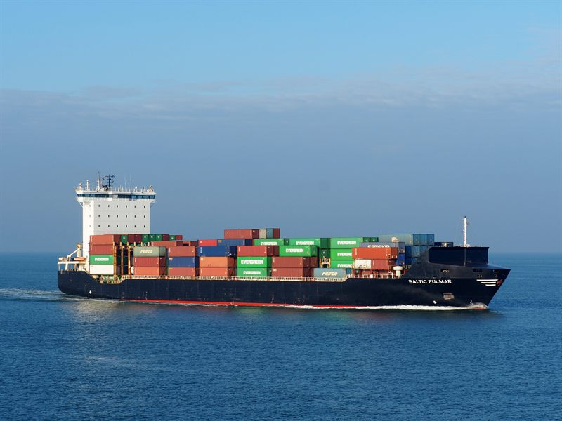
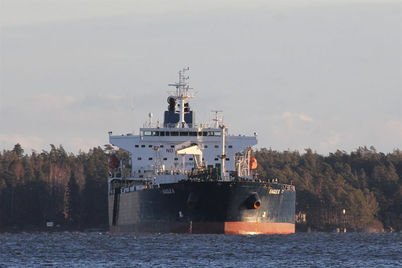
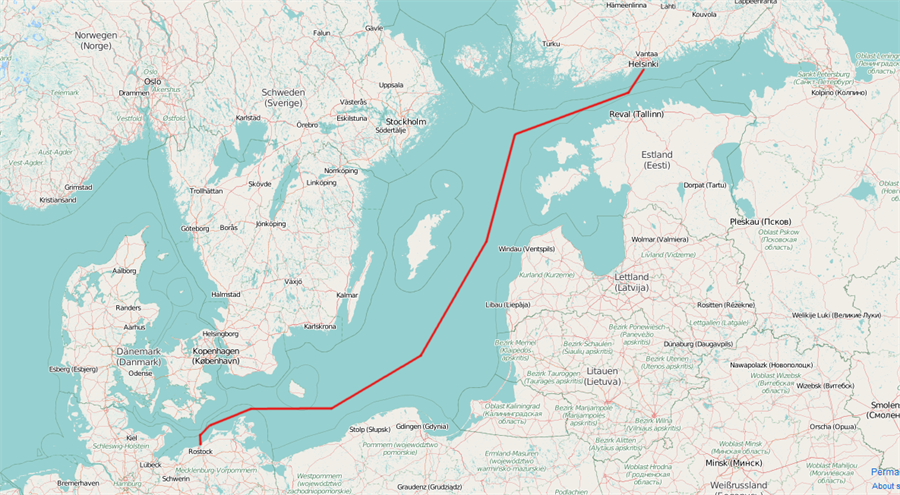
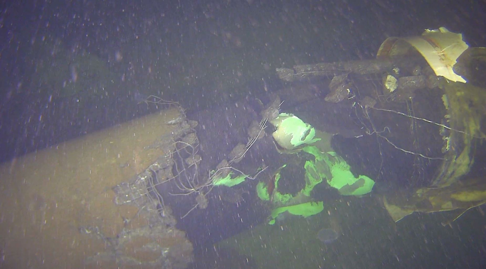
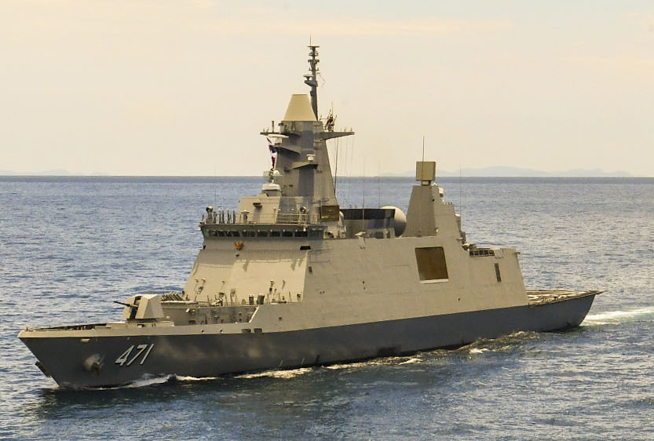

รวบรวมและตรวจสอบจากแหล่งปฐมภูมิ — การปกป้องโครงสร้างพื้นฐานใต้ทะเล (Underwater Data Center) บริเวณช่องแคบเกาะคราม อ.สัตหีบ อ่าวไทย
บอลติกคือ “ห้องเรียนสด” ของ สงครามเทาใต้ทะเล (การตัดสายเคเบิลแบบปฏิเสธความรับผิดได้) ส่วนสิงคโปร์คือ เพื่อนบ้านที่พร้อมร่วมมือ และมีพัฒนาการ seabed domain ก้าวหน้าที่สุดในภูมิภาค — ทั้งสองชี้เป้าตรงไปยังสิ่งที่ THE SHIELD ต้องทำต่อ
กรอบการนำเสนอ: รายงานนี้เน้น “ข้อเท็จจริง (วันที่/เรือ/แหล่งข่าว) + บทเรียนสำหรับ THE SHIELD” — โดยไม่บังคับกรอบ OODA ทุกข้อเท็จจริงผ่านการตรวจสอบจากแหล่งปฐมภูมิ (รัฐบาล/กองทัพ/สำนักข่าวหลัก) ดูรายการในหัวข้อ “แหล่งอ้างอิง”
ตั้งแต่ปลายปี 2023 ทะเลบอลติกเกิดเหตุสายเคเบิลและท่อใต้ทะเลถูกตัดซ้ำหลายครั้ง รูปแบบเดียวกัน — เรือพาณิชย์ “ลากสมอ” ผ่านแนวสาย ทำให้เกิดความเสียหายที่ พิสูจน์เจตนาได้ยาก (plausible deniability) นี่คือแม่แบบของภัยคุกคามที่ THE SHIELD ต้องเตรียมรับ
ท่อก๊าซฟินแลนด์–เอสโตเนีย และสายสื่อสารเสียหายจากการลากสมอของเรือสัญชาติจีน เป็น “เหตุการณ์ตั้งต้น” ที่จุดความตื่นตัวทั้งภูมิภาค
สายสวีเดน–ลิทัวเนีย (17 พ.ย.) และสายฟินแลนด์–เยอรมนี (18 พ.ย.) ถูกตัดในเขต EEZ ของสวีเดน เรือบรรทุกสินค้าจีน Yi Peng 3 อยู่ตรงจุด-เวลาพอดี สงสัยลากสมอ — แต่ยังไม่มีการชี้ความผิดอย่างเด็ดขาด
สายไฟฟ้าเอสโตเนีย–ฟินแลนด์ และสายสื่อสารเสียหายในอ่าวฟินแลนด์ ฟินแลนด์ “ยึดเรือ” Eagle S เป็นการบังคับใช้กฎหมายที่เด็ดขาดที่สุดครั้งหนึ่ง
ตอบโต้ด้วยการลาดตระเวนถาวร — เรือฟริเกต + อากาศยานตรวจการณ์ + ฝูงโดรนทางทะเล + แชร์ภาพ MDA ร่วม นำโดย JFC Brunssum/MARCOM ผ่านเครือข่าย Critical Undersea Infrastructure




สิงคโปร์มองโครงสร้างพื้นฐานใต้ทะเลเป็น “เส้นเลือดเศรษฐกิจดิจิทัล” ระดับชาติ (รองรับทราฟฟิกระหว่างประเทศ >99% ผ่านสายเคเบิล) จุดน่าสนใจคือ โครงการ data center ทางทะเลของสิงคโปร์เป็นแบบ “ลอยน้ำ” ไม่ใช่ “จม” — ขณะที่ UDC จมจริงไปเกิดที่จีนแล้ว
25MW โมดูลลอยน้ำใกล้ฝั่ง ระบายความร้อนด้วยน้ำทะเลแบบวงจรปิด (ไม่ใช้น้ำจืด) — อนุมัติปี 2023, สร้าง Q1/2026, เปิด 2028 ต่อยอดแนวคิด DataPark+ 1 GW nearshore
UDC เชิงพาณิชย์รายแรกของโลก แคปซูล ~1,433 ตัน ลึก 35 ม. เปิด 2023 ประหยัดพลังงาน ~30% เป้าแผน 5 ปีที่ 14 = 100 แคปซูล → พิสูจน์ว่าแนวคิดแบบ THE SHIELD เป็นจริงแล้วในภูมิภาค
ST Engineering ส่งมอบชุด MCM ไร้คนขับ (USV/AUV + C2, IMDEX 2025, ส่งมอบ 2027) ติด sonar สำรวจพื้นทะเล + เรือดำน้ำ Invincible-class เพิ่มเป็น 6 ลำ — แนวทางเดียวกับ USV/AUV ของ THE SHIELD
ครั้งที่ 21 (7–15 ก.ค. 2024) ที่สัตหีบ/อ่าวไทย — RSS Valiant + RSS Indomitable กับ ร.ล.ตากสิน/ร.ล.ภูมิพลอดุลยเดช จัดต่อเนื่องตั้งแต่ ปี 1981 ทับซ้อนพื้นที่ THE SHIELD พอดี

บอลติกบอก “ภัยหน้าตาเป็นอย่างไรและต้องตอบโต้แบบไหน” สิงคโปร์บอก “จะร่วมมือกับใครและด้วยช่องทางใด” — นำมาประกบกันได้ข้อเสนอที่ทำได้จริง
เสนอเพิ่ม serial “Seabed/CUI Protection” ใน Exercise SINGSIAM รอบถัดไป — ทดสอบแนวคิด THE SHIELD กับ RSN ในพื้นที่จริง (สัตหีบ) โดยไม่ต้องสร้างกลไกความร่วมมือใหม่
เชื่อม MDA ของ THE SHIELD เข้ากับ IFC ชางงี เพื่อแชร์ภาพเรือต้องสงสัย/เหตุใกล้ UDC ใช้บทเรียน Baltic Sentry เรื่อง shared awareness
วางไทยเป็น “เจ้าของ UDC จมใต้ทะเลรายแรกของอาเซียน” (ต่างจาก Keppel ที่ลอยน้ำ) อ้างอิงต้นแบบจีนไหหลำว่าเทคโนโลยีเป็นจริงแล้ว → ไทยเป็นผู้นำองค์ความรู้ด้านป้องกัน seabed ในภูมิภาค
หมายเหตุความเชื่อมั่น: ทุกข้อตรวจสอบจากแหล่งปฐมภูมิแล้ว (MINDEF, NATO, SCMP, Naval News, Keppel ฯลฯ) ความเชื่อมั่น สูง ตัวเลขที่ควรอัปเดตก่อนใช้งานจริง: สัดส่วน GDP ดิจิทัลสิงคโปร์ (~17.7% น่าจะฐานปี 2023) และจำนวนสายเคเบิลที่แน่นอน (26→28+ กำลังเปลี่ยน) · ไม่บังคับกรอบ OODA
ผลวิจัยนี้ได้จากกระบวนการค้นหลายมุม (multi-angle deep research) + การตรวจสอบยืนยันเจาะจงรายข้อเท็จจริงสำคัญด้วยการค้นแหล่งปฐมภูมิซ้ำ ลิงก์ทั้งหมดข้างต้นเปิดได้จริง ณ วันจัดทำ (มิ.ย. 2026)